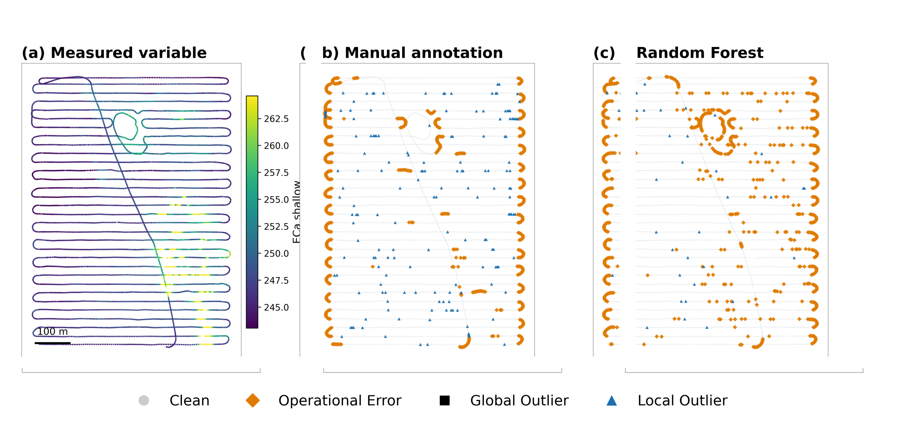

Machine learning can clean data from a sensor it has never seen — but only the errors that move with the machine.

| Class | Random Forest | XGBoost | ||||
|---|---|---|---|---|---|---|
| P | R | F1 | P | R | F1 | |
| Clean | 0.96 | 0.94 | 0.95 | 0.96 | 0.85 | 0.90 |
| Operational | 0.46 | 0.63 | 0.52 | 0.30 | 0.65 | 0.40 |
| Local | 0.44 | 0.24 | 0.30 | 0.32 | 0.38 | 0.34 |
Macro-averaged over three held-out folds. Random Forest macro-accuracy 0.90, XGBoost 0.83. Clean data and operational (machine-movement) errors transfer across sensors; local spatial anomalies do not — the motivation for a spatially-explicit graph model next. Global class excluded (n = 14).
A headland turn is a headland turn on any machine — that kinematic signature is sensor-independent, so the model carries it across.
“Unusual for this neighbourhood” depends on each sensor's own value distribution, so what's learned as locally weird on one sensor is meaningless on another.
13 features: field-relative motion + fixed-radius (15/30/45 m) spatial z-scores — comparable across a soil sensor and a combine.
import joblib, json
from reta_ml.load import load_table
from reta_ml.preprocess import preprocess_pipeline, recompute_value_stats
from reta_ml.lofo_benchmark import _feature_matrix
feats = json.load(open("models/feature_columns.json"))
rf = joblib.load("models/random_forest.joblib")
raw = load_table("your_field.gpkg", validate=False) # bring your own sensor data
raw["value"] = raw["<your_value_column>"]
proc = preprocess_pipeline(raw, main_variable="value", local_stats_mode="fixedbands")
proc = recompute_value_stats(proc, main_variable="value", local_stats_mode="fixedbands")
pred = rf.predict(_feature_matrix(proc, feats)) # 0=Clean 1=Operational 2=Global 3=Local
Full framework, the HeteroGAT graph model, and an interactive Streamlit app are in the repository.